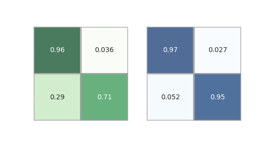

Motivation
Die meisten (optischen) Teleskope müssen vor Niederschlägen geschützt werden, um Schäden an ihrer Optik und Elektronik zu verhindern. Aus diesem Grund verwenden die meisten Observatorien Allsky-Kameras – günstige, aber sehr empfindliche CMOS-Kameras, die mit Fisheye-Objektiven ausgestattet sind – die den Nachthimmel auf herannahende Wolken überwachen. Teleskopbetreiber können Live-Streams von diesen Kameras beobachten, um informierte Entscheidungen darüber zu treffen, ob die aktuelle Wettersituation das Schließen der Teleskopkuppel erfordert oder nicht.
Es wäre sinnvoll, diesen Entscheidungsprozess zu automatisieren, sodass beispielsweise robotergestützte Teleskope ihre Gehäuse autonom schließen können, wenn Wolken vorhanden sind, ohne menschliches Eingreifen. Ein sehr ähnliches System könnte verwendet werden, um die Bedingungen der Himmelqualität auf eine stark unvoreingenommene Weise zu messen.
Problem
Leider ist die automatisierte Erkennung von Wolken in Bilddaten keine triviale Aufgabe. Aufgrund variierender Beleuchtungsbedingungen und Wolkendicke, der heterogenen Helligkeit des Himmelshintergrunds und anderer Effekte treten Wolken am Nachthimmel in den Bildern der Allsky-Kameras auf unterschiedliche Weise auf, was ihre Identifizierung erschwert. Zusätzliche Komplikationen treten während der Dämmerung oder an “hellen Nächten” auf, wenn der Mond aufgeht. Diese Komplikationen werden in der oben gezeigten Animation veranschaulicht, in der Wolken zunächst dunkler erscheinen als der klare Himmel, dann aber nach Mondaufgang deutlich aufhellen.
Meine Hoffnung war, dass Modelle des maschinellen Lernens in der Lage sein sollten, mit diesem Komplexitätsgrad problemlos umzugehen.
Methoden und Daten
Ich habe zwei verschiedene Ansätze des maschinellen Lernens für dieses Problem getestet:
- einen Deep-Learning-Ansatz, der eine ResNet-18-Implementierung verwendet, die direkt auf den Bilddaten arbeitet, und
- ein gradient-boosted tree-based Modell (lightgbm), das auf vorverarbeiteten und extrahierten Merkmalen arbeitet; diese Merkmale umfassen Metriken wie die Anzahl der Quellen und die durchschnittliche Hintergrundhelligkeit sowie deren zeitliche Ableitungen über ein polares Gitter in jedem Bild, sowie zusätzliche Informationen zu den Beobachtungsbedingungen.
Beide Modelle wurden an einem Satz von 1975 Allsky-Kamera-Bildern des Discovery Telescopes des Lowell-Observatoriums (ehemals Discovery Channel Telescope) trainiert, die zufällig aus einem Zeitraum von 14 aufeinanderfolgenden Monaten ausgewählt wurden. In allen Bildern dieses Satzes wurde das Vorhandensein von Wolken auf einem polarer Gitter manuell gekennzeichnet.
Ergebnisse
Die Ergebnisse waren haben zwei Dinge gezeigt:
-
Der Deep-Learning-Ansatz mit der ResNet-Implementierung konnte nur eine Genauigkeit von 85% erreichen. Dies liegt höchstwahrscheinlich an der relativ kleinen Stichprobengröße für diesen Modelltyp. Bessere Ergebnisse sind mit einer deutlich größeren Stichprobengröße möglich.
-
Das lightgbm-Modell schneidet mit einer Genauigkeit von etwa 95% viel besser ab, was bei größeren Stichprobengrößen voraussichtlich nicht verbessert werden kann.
{kind=link}

Ein weiterer wichtiger Verkaufsfaktor für das lightgbm-Modell ist die Trainingszeit. Während ein bedeutender Modelltrainingsprozess für das lightgbm-Modell nur wenige Sekunden in Anspruch nimmt, dauert es beim ResNet-Ansatz bis zu einer Stunde.
Für die vollständige Analyse verweisen Sie bitte auf die Veröffentlichung im üAstronomical Journal](https://iopscience.iop.org/article/10.3847/1538-3881/ab744f) oder den arxiv pre-print.
Schlussfolgerung
Ich empfehle die merkmalsbasierte Vorgehensweise, da sie in dieser Art von Anwendung die Deep-Learning-Ansätze mühelos übertrifft und dabei nur einen Bruchteil der Ressourcen benötigt. Angesichts der hohen Genauigkeit des lightgbm und der Tatsache, dass dies anscheinend die maximal erreichbare Genauigkeit ist (d.h. sie ist nicht durch die Stichprobengröße begrenzt), kann man sagen, dass diese Genauigkeit nur durch die menschliche Genauigkeit bei der manuellen Kennzeichnung der Trainingsdaten begrenzt ist.
Bibliographie
-
Mommert, M. 2020, “Cloud Identification from All-sky Camera Data with Machine Learning”, The Astronomical Journal, 159, 178., publication, arxiv
-
Mommert, M. 2020: code and example data